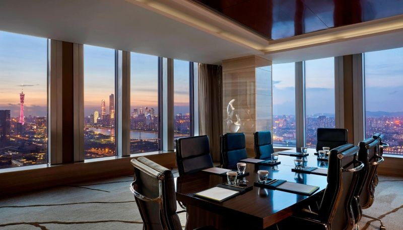

20 places for your
media room.
A nearby base for filmed conversations, with real venue images, access notes and a clear view of what still needs checking.
Explore all 20 locations ↓
Start with
these four.
Direct fair access and a skyline-room lead.
Interview facilitiesInterContinentalA named media room plus river-view meeting options.
Exhibition backdropCourtyard PazhouSuite images show the nearby hall roofs.
Ready-made filming spacePoly World TradeA dedicated livestream set close to the halls.
Proximity is the starting point. This list covers Pazhou, Chigang and the immediately adjacent north bank. Eight options are on site or walkable; the rest require a local transfer. Across-river hotels are lower-priority backups.
How to read distance, view and availability notes
*Travel estimates: Unattributed drive-time bands are planning estimates for normal traffic, not live navigation results. Published distances and transfer claims are attributed on the relevant card. Different fair gates, traffic controls and entry queues can change the journey substantially. Confirm the route from your actual hall.
Views: “Landmark lead” means a photo or venue claim supports further investigation, not that a specific room is secured. River-view bedrooms do not prove river-view meeting rooms. “Room to request”, filming suitability and the ranking are editorial judgements.
Status: This is a research shortlist, not confirmed availability. No venue has been contacted or booked. Quotes depend on the shoot date, duration, crew and exclusive-use requirements. Images are credited reference material; some are older marketing photographs. All 20 entries are different venue locations.
Before the recce.
Ask sales for the exact room, not just the hotel brochure.
Get a daytime phone video from seated eye level. Confirm the tower or hall appears behind the guest, with space for lights and cameras.
Listen with air conditioning running. Ask about adjacent events, music, shared corridors and an indoor fallback for terraces.
Confirm filming permission, exclusive use, setup time, furniture changes, power, guest access and the full hire quote.